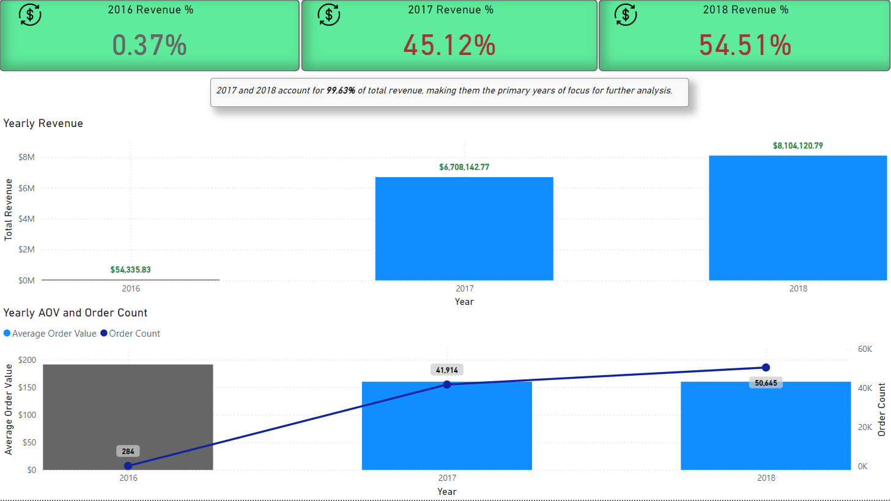
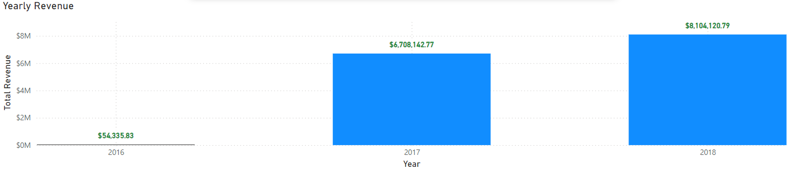
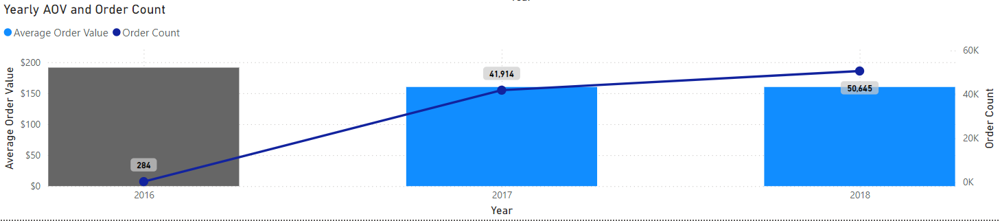

Yearly Revenue Trends Analysis

Purpose
This analysis evaluates yearly revenue trends, order counts, and average order value (AOV) to identify significant growth years and justify the exclusion of 2016 from further analysis.
Key Insights
-
2016 Contribution: 2016 accounted for only 0.37% of the total revenue
($54,335.83), making it insignificant for further analysis.
-
2017 and 2018: These two years contributed a combined 99.63% of total revenue:
- 2017: 45.12% ($6,708,142.77)
- 2018: 54.51% ($8,104,120.79)
-
Average Order Value (AOV) Trend:
-
AOV was highest in 2016 despite its low order count, reflecting fewer but larger orders.
-
Between 2017 and 2018, AOV decreased by 3 cents (from approximately $160.13),
despite order count growing from 41,914 to 50,645.
Dashboard Features and Sections
KPI Cards
Three KPI cards provide revenue percentages for each year at a glance:
- 2016 Revenue %: 0.37%
- 2017 Revenue %: 45.12%
- 2018 Revenue %: 54.51%
Screenshots
Revenue Percentage KPI Cards
Callout
A callout emphasizes that 2017 and 2018 account for 99.63% of total revenue, focusing the analysis on these years.
Screenshots
Visualizations
1. Yearly Revenue Bar Chart
Displays total revenue for 2016, 2017, and 2018. Highlights the minimal revenue contribution in 2016 compared to significant growth in 2017 and 2018.
Screenshots

Yearly Revenue Bar Chart
2. Yearly AOV and Order Count
A dual-axis chart showing:
- Average Order Value (AOV): Trends across years, highlighting the peak in 2016 and slight decrease in 2018.
- Order Count: Steady growth from 2016 to 2018, with significant increases in 2017 and 2018.
Screenshots

Yearly AOV and Order Count Chart
Visual Insights
Yearly Revenue
Revenue shows a significant jump from 2016 to 2017, with continued growth into 2018. This growth justifies focusing on these two years.
Yearly AOV and Order Count
-
2016: Highest AOV, but only 284 orders were placed.
-
2017: A sharp increase to 41,914 orders.
-
2018: Order count continued to rise to 50,645, while AOV slightly declined.
Insights in Action
This analysis helps justify focusing on 2017 and 2018 for further revenue and profitability analysis. The trends in AOV and order count also highlight the need to:
-
Investigate factors driving the slight decrease in AOV despite increased order counts in 2018.
-
Identify opportunities to optimize order value while maintaining high order volumes.
Measures Used
-
Total Revenue: Sum of revenue for each year. Learn more
-
Order Count: Total number of orders placed per year. Learn more
-
Average Order Value (AOV): Revenue divided by the total number of orders. Learn more